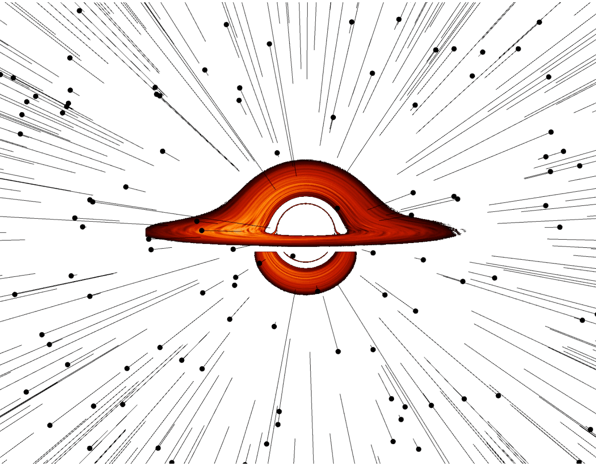
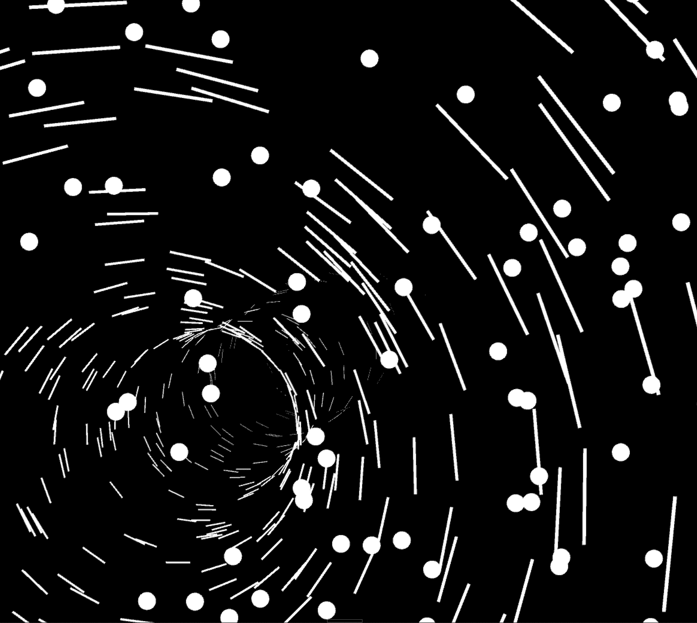
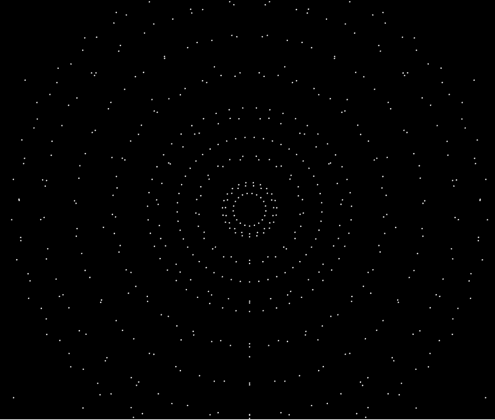

Project:
GEN ART (Website still in progress)
During this project, I found it really interesting that we were given a lot of creative freedom: we could create almost anything we wanted, as long as it was discussed with the artist. In the first week, we met the artist we would be working with.
The project lasted ten weeks, and we started without any prior knowledge about the artist or the technology involved. We learned to work with Processing (using P5.js), a programming language similar to JavaScript but with added libraries for features like frequency and BPM detection. This allowed us to create scenes that reacted to music or could be controlled using Arduino.
Even though we had ten weeks, it went by really fast and the deadlines quickly started closing in. I wanted to create something inspired by black holes, based on my favorite movie Interstellar. I love space and black holes, so that became the main source of my inspiration.

Throughout the project, I learned a lot, not only by myself but also by working with friends. We helped each other, which made the process less stressful.
At the end of the ten weeks, we had a live performance together with the artist, where we presented and showcased the visual scenes we had created. We also had to explain what we made, how it worked, and how the visuals connected to the music in real-time.
While working on the coding part, we were also required to conduct research. We did desk research on existing generative art projects, which we could remix or take inspiration from. This taught us how to back up our creative ideas with proper research, combining creativity with structured design thinking.
The project was part of the Live Visuals for Live Music module, where we acted as VJs, designing generative visuals that reacted to live music performances. Our work was meant to create an immersive audiovisual experience for the audience. Using real-time systems and interactive designs, we explored how technology, sound, and visuals come together to create emotion and energy during live events.
Overall, it was a really fun project, and definitely one of my favorite experiences so far!